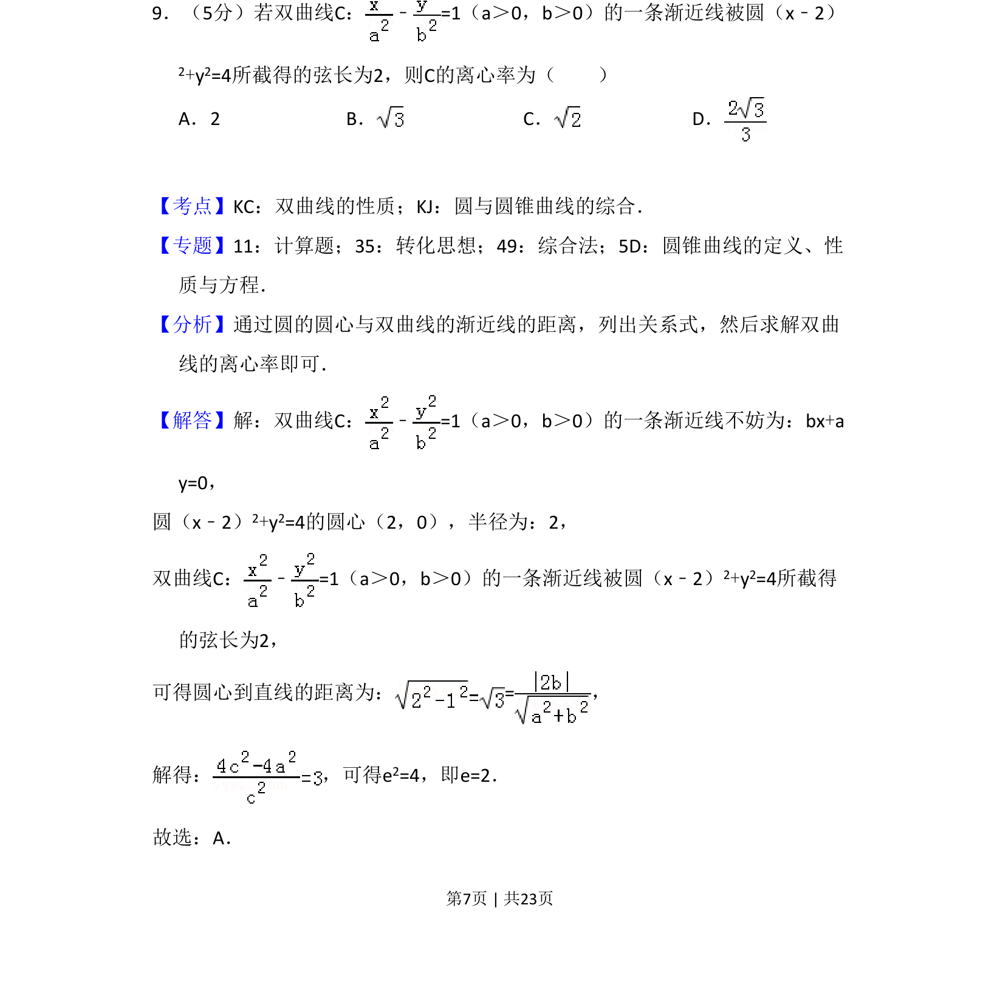
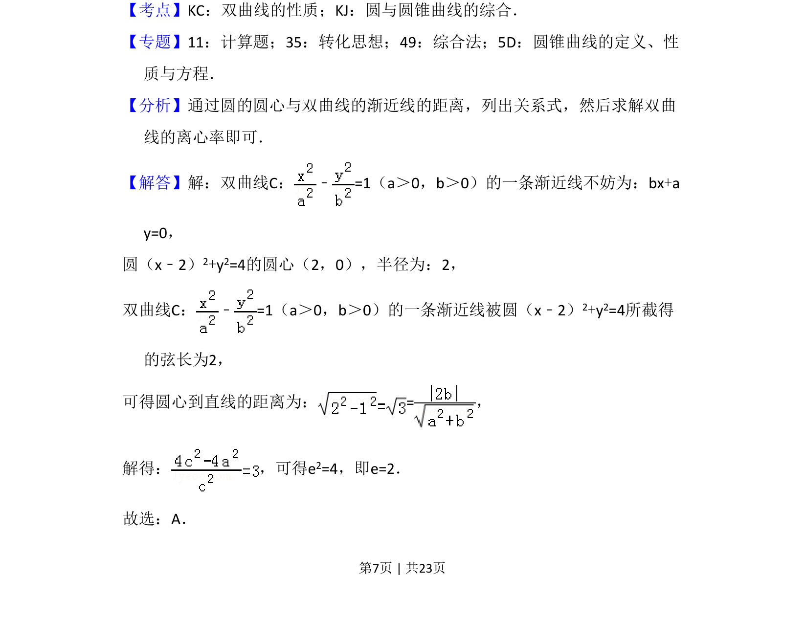
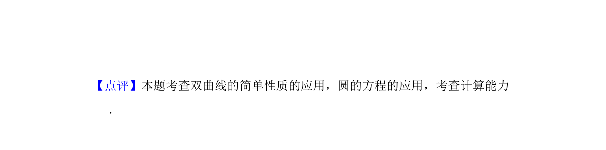

考点：双曲线性质 圆的性质 点到直线距离公式 离心率

双曲线渐近线被圆截弦长，求离心率


📄 原 PDF 第 7 页：
素材/真题/吉林/2008-2024·（吉林）数学高考真题/2017年高考数学试卷（理）（新课标Ⅱ）（解析卷）.pdf
9．（5分）若双曲线C： ﹣=1（a＞0，b＞0）的一条渐近线被圆（x﹣2） 2+y2=4所截得的弦长为2，则C的离心率为（ ） A．2 B．C．D．
【考点】KC：双曲线的性质；KJ：圆与圆锥曲线的综合．菁优网版权所有 【专题】11：计算题；35：转化思想；49：综合法；5D：圆锥曲线的定义、性 质与方程． 【分析】通过圆的圆心与双曲线的渐近线的距离，列出关系式，然后求解双曲 线的离心率即可． 【解答】解：双曲线C： ﹣=1（a＞0，b＞0）的一条渐近线不妨为：bx+a y=0， 圆（x﹣2）2+y2=4的圆心（2，0），半径为：2， 双曲线C： ﹣=1（a＞0，b＞0）的一条渐近线被圆（x﹣2） 2+y2=4所截得 的弦长为2， 可得圆心到直线的距离为：=， 解得： ，可得e 2=4，即e=2． 故选：A．